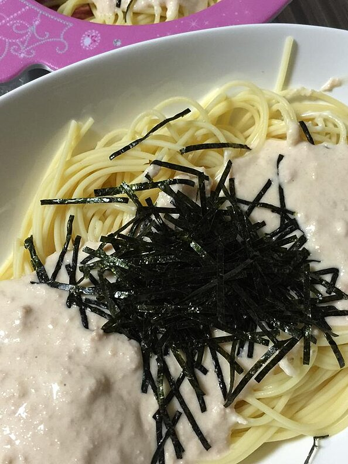

Tarako Spaghetti

Ingredients
- 2 pieces of salted cod roe with red pepper (tarako)
- 4 ounces angel hair pasta
- 2 tablespoons butter
- ⅓ cup heavy cream
Steps
-
Cut open the casing on the roe, and squeeze the eggs out onto a plate.
Discard the casings.
-
Melt butter in a skillet over medium heat. Add roe, and cook, stirring
until the color of the roe changes from dark orange to light orange.
Stir in the heavy cream until well blended and heated through. Turn off
the heat.
-
Meanwhile bring a pot of lightly salted water to a boil. Add angel hair
pasta, and cook until al dente, 2 to 3 minutes. Drain, and toss with
sauce to serve.
Back to index